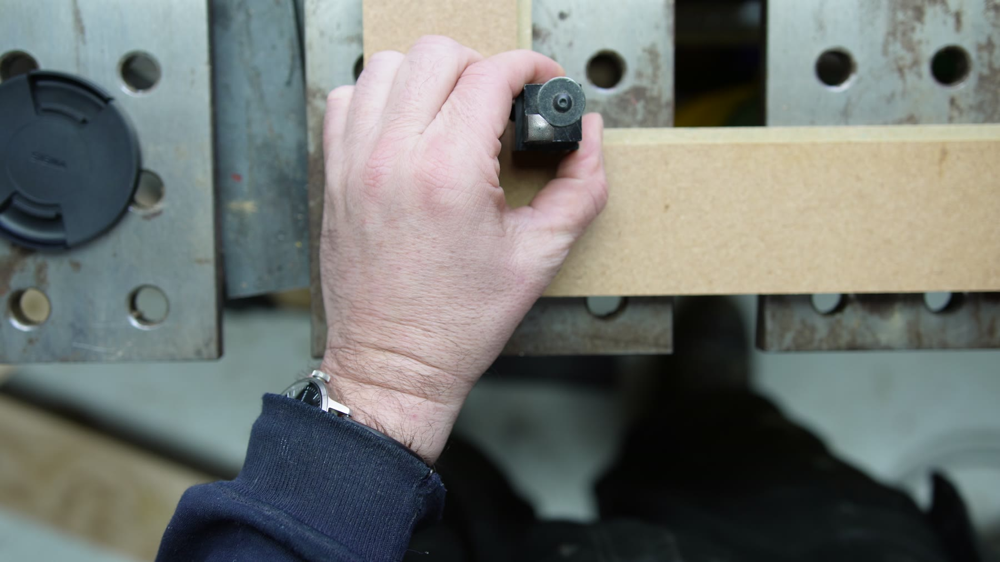
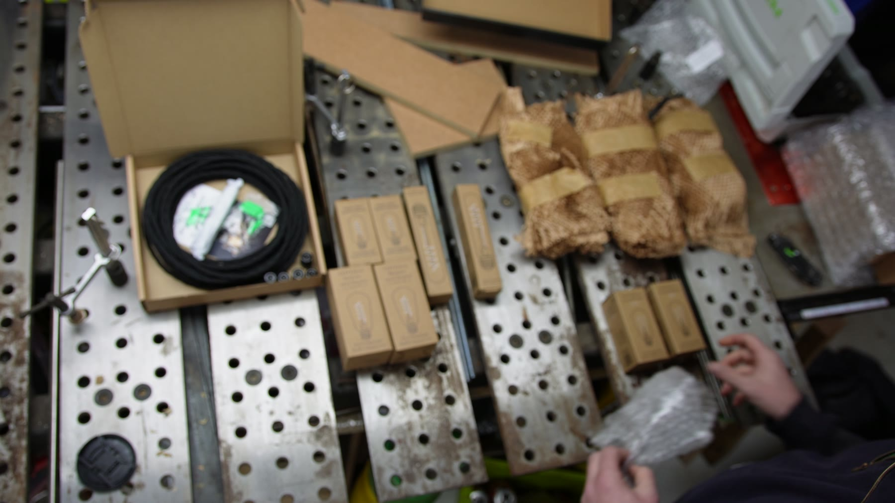
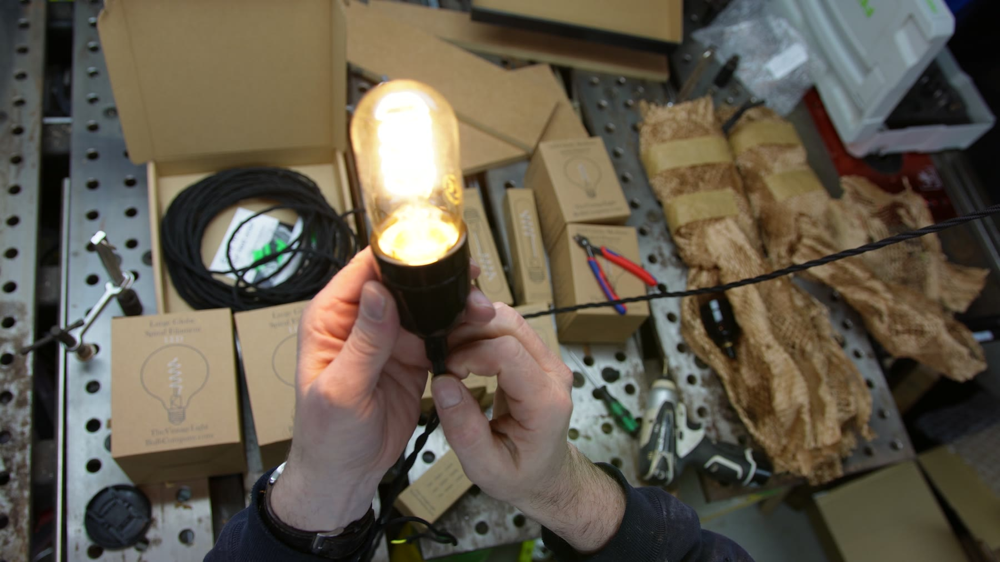
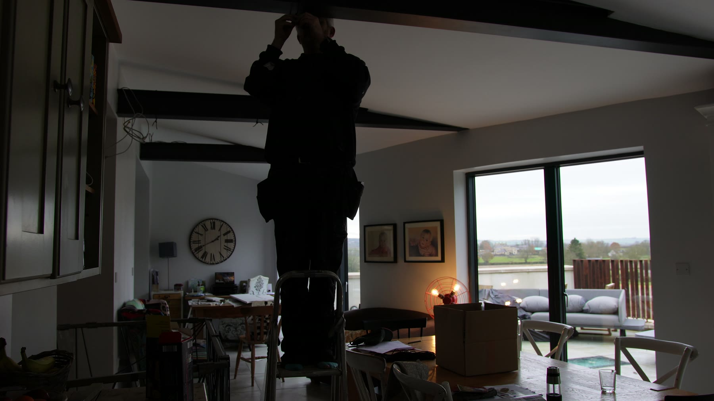
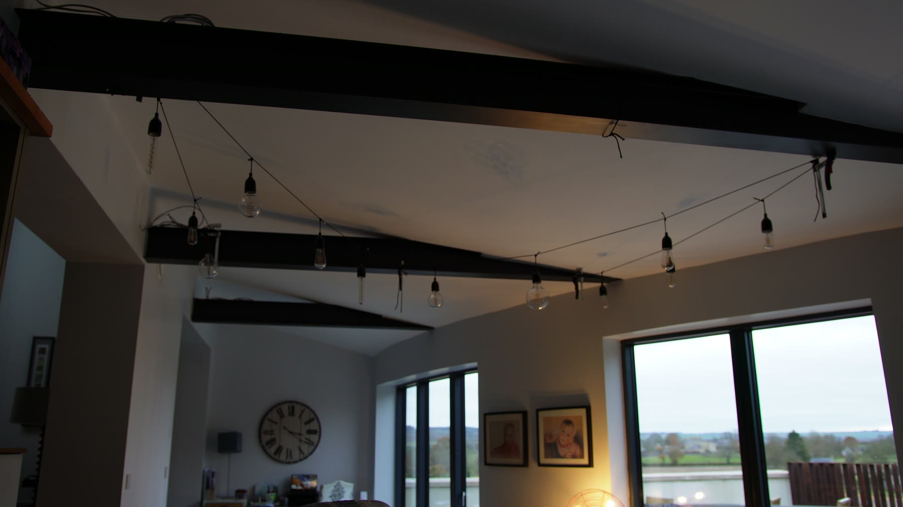
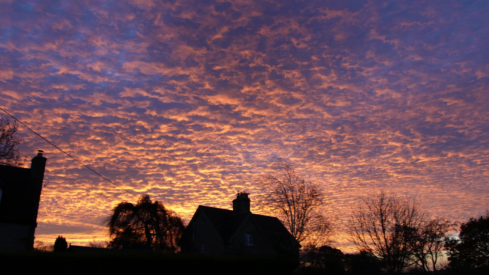

Wiring
Lighting / wiring / house details
Vintage String Lights
Custom string lights for the house: twisted cable, warm filament bulbs, little made parts, ceiling beams, and enough workshop faff to make buying the dull version feel like surrender.
The point was not just illumination. It was to make the room feel warmer and more personal, with the cables and bulbs sitting comfortably among the steel beams, timber and general house-built-by-someone-who-keeps-tools-nearby atmosphere.
Workshop cut
Small parts, lots of repetition.
The build starts in the workshop: cutting little blocks, laying out parts, wiring holders, testing bulbs, then turning a pile of electrical bits into something that belongs in the room.
Installation
Threading the room.
The idea
Make the useful thing characterful.
Lights are easy to buy. But a run of lighting across a room changes the feeling of the space, so it was worth making something that felt deliberate: warm, slightly industrial, and not too polished.
The build
Wires, blocks and bulb holders.
The making footage has the usual rhythm: cut, mark, assemble, test, install, adjust, repeat. Not glamorous, but exactly the kind of small practical job that quietly improves a room.





